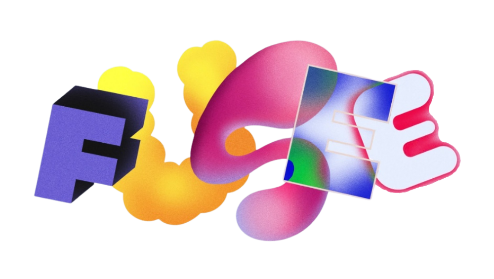

My Active Checkouts
Loading active borrowings...
Loading available tools...
5-Minute Counter Pickup Rule
Select a tool above and claim it at the counter within 5 minutes of request.

Loading profile...
Scanner access disabled until items are cleared at the Return Shelf.
Loading active borrowings...
Loading available tools...
5-Minute Counter Pickup Rule
Select a tool above and claim it at the counter within 5 minutes of request.